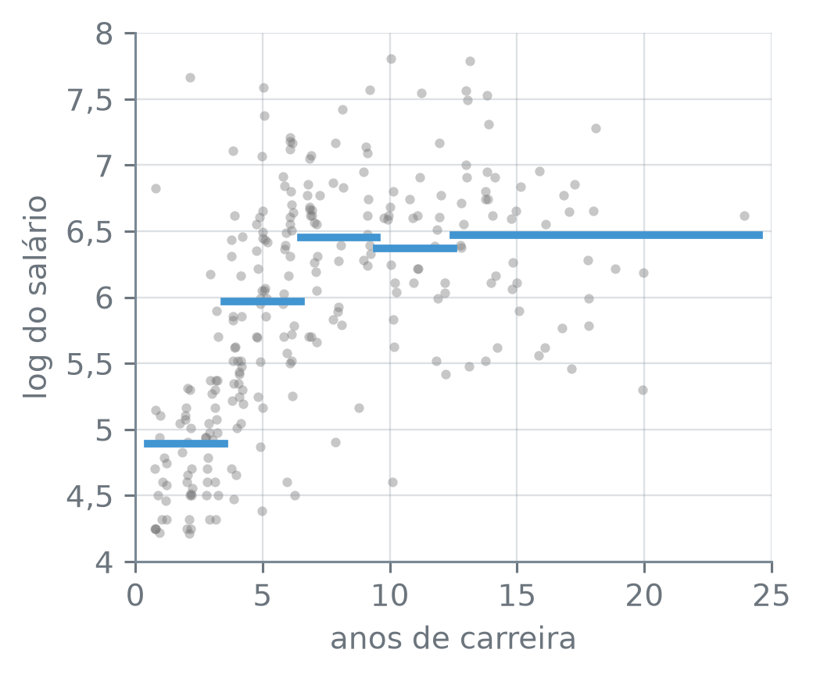
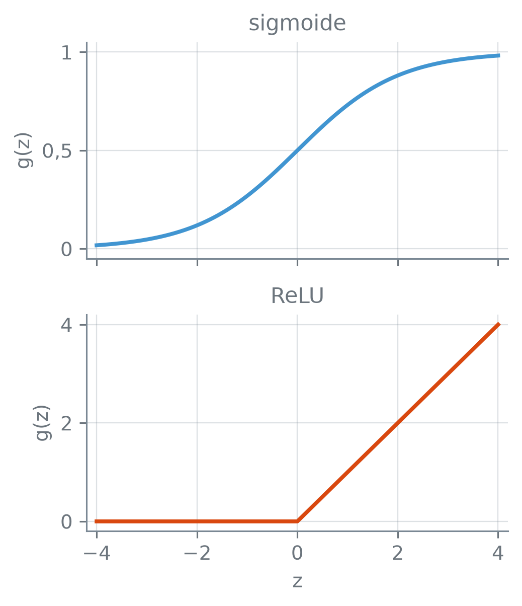
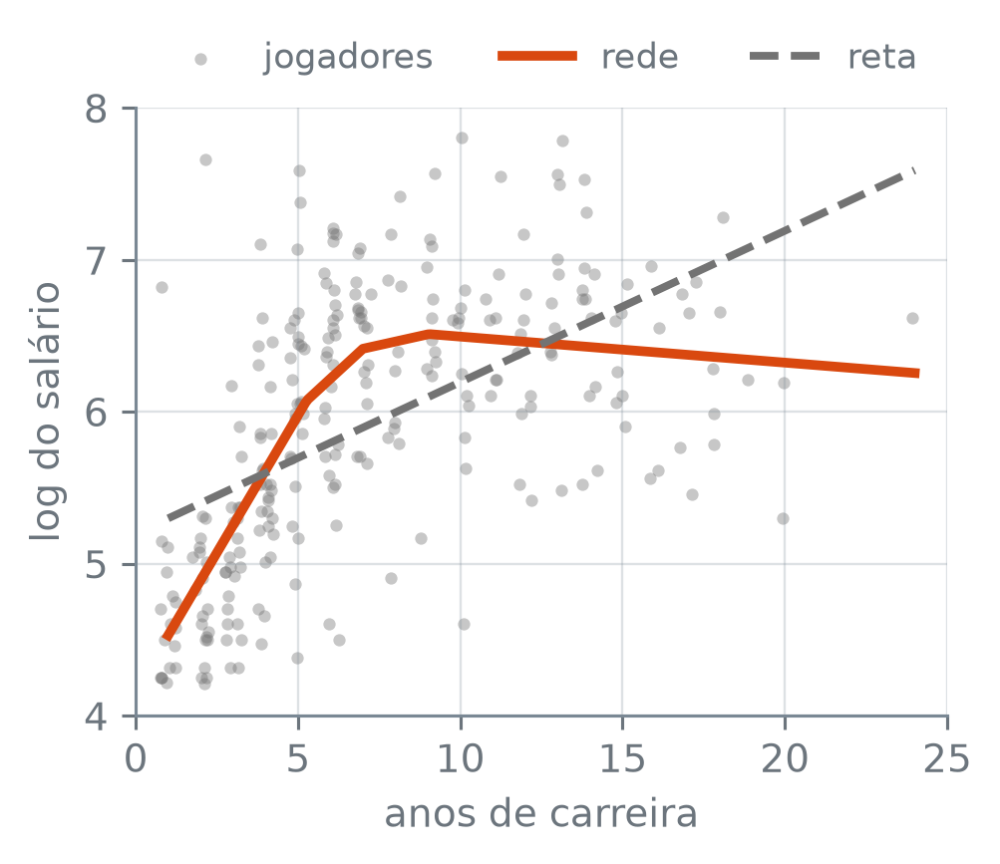

numero_br = lambda valor, casas=2: (
f"{valor:,.{casas}f}".replace(",", "_").replace(".", ",").replace("_", ".")
.replace("-", "−")
)Uma Rede de Camada Única
Nota
Esta seção corresponde à seção 10.1 de James et al. (2023).
O salário de um jogador de beisebol cresce com os anos de carreira, mas não em linha reta: depois de alguns anos ele para de subir. Uma reta ajustada a esses dados sobe com a mesma inclinação do começo ao fim. Dá para montar uma curva que acompanhe o dado somando algumas retas “dobradas”, cada uma ligada só de um lado de certo ponto?
A função numero_br escreve os números com a pontuação brasileira:
Os anos de carreira
A tabela Hitters reúne estatísticas de jogadores das grandes ligas de beisebol dos Estados Unidos na temporada de 1986, com o salário da temporada de 1987 em milhares de dólares. O único preditor aqui é anos, o número de anos do jogador na liga principal. A resposta é o logaritmo natural do salário, e o motivo é a escala: os salários variam muito de um jogador para outro, e no log uma mesma diferença corresponde a uma mesma proporção do salário, seja ele pequeno ou grande.
O código lê a tabela, descarta os jogadores sem salário e calcula a média do log do salário em cinco faixas de anos de carreira. Ao lado de cada média vai \(e\) elevado a ela, que dá um salário típico da faixa, em milhares de dólares:
hitters = pd.read_csv("dados/Hitters.csv")
print("jogadores na tabela:", len(hitters))
hitters = hitters.dropna()
print("com salário:", len(hitters))
print("anos: de", hitters["anos"].min(), "a", hitters["anos"].max())
print("salário: de", numero_br(hitters["salario"].min(), 1),
"a", numero_br(hitters["salario"].max(), 1))
y = np.log(hitters["salario"])
X = hitters[["anos"]]
limites = [0, 3, 6, 9, 12, 24]
faixas = pd.cut(hitters["anos"], limites,
labels=["1 a 3", "4 a 6", "7 a 9",
"10 a 12", "13 a 24"])
medias = y.groupby(faixas, observed=True).mean()
print("média do log (e^média):")
for faixa, media in medias.items():
print(f" {faixa} anos: {numero_br(media)}"
f" ({numero_br(np.exp(media), 0)})")jogadores na tabela: 322
com salário: 263
anos: de 1 a 24
salário: de 67,5 a 2.460,0
média do log (e^média):
1 a 3 anos: 4,89 (133)
4 a 6 anos: 5,97 (390)
7 a 9 anos: 6,45 (636)
10 a 12 anos: 6,37 (583)
13 a 24 anos: 6,47 (647)pd.read_csv(caminho) — lê um arquivo CSV numa tabela (DataFrame). df.dropna() — a tabela sem as linhas que têm algum valor ausente. serie.min(), serie.max() — o menor e o maior valor da coluna. np.log(v) — o logaritmo natural de cada valor; np.exp(v) faz o caminho de volta, \(e\) elevado a cada valor. pd.cut(v, limites, labels) — troca cada valor de v pela faixa em que ele cai; cada faixa inclui o limite da direita e exclui o da esquerda, e labels dá o nome das faixas. serie.groupby(faixas, observed=True).mean() — a média de serie em cada faixa; observed=True deixa de fora faixas sem nenhum jogador. serie.items() — percorre a série em pares (rótulo, valor).
Dos 322 jogadores, 263 têm salário, com carreiras de 1 a 24 anos e salários de 67,5 a 2.460,0 mil dólares. A média do log do salário sobe de 4,89 nos três primeiros anos (um salário típico de cerca de 133 mil dólares) para 5,97 entre o quarto e o sexto (390 mil) e para 6,45 entre o sétimo e o nono (636 mil). Nas duas faixas seguintes, ela fica em 6,37 e 6,47. A figura mostra os jogadores e essas médias:
rng = np.random.default_rng(14)
tremor = rng.uniform(-0.25, 0.25, size=len(X))
fig, ax = plt.subplots(figsize=(3.8, 3.2))
ax.scatter(X["anos"] + tremor, y, s=10, color="0.45", alpha=0.4,
linewidths=0)
for inicio, fim, media in zip(limites[:-1], limites[1:], medias):
ax.plot([inicio + 0.5, fim + 0.5], [media, media], color="C0",
linewidth=2.5)
ax.set_xlim(0, 25)
ax.set_xlabel("anos de carreira")
ax.set_ylabel("log do salário")
ax.yaxis.set_major_formatter(lambda v, _: f"{v:g}".replace(".", ","))
plt.tight_layout()
plt.show()
np.random.default_rng(14) — um gerador de números aleatórios com semente 14; rng.uniform(a, b, size) sorteia size números uniformes entre a e b, aqui só para afastar na horizontal os pontos de jogadores com os mesmos anos. plt.subplots(figsize=(largura, altura)) — cria uma figura, com o tamanho em polegadas, e devolve a figura e o eixo ax em que se desenha. ax.scatter(x, y, s, color, alpha, linewidths) — um ponto por par (x, y), de área s, com transparência alpha e sem contorno (linewidths=0). ax.plot(x, y, color, linewidth) — uma linha pelos pontos dados, aqui um segmento de dois pontos. ax.set_xlim(a, b) — os limites do eixo horizontal; set_ylim faz o mesmo no vertical. ax.set_xlabel(texto), ax.set_ylabel(texto) — os nomes dos eixos. ax.yaxis.set_major_formatter(f) — escreve cada marca do eixo vertical com a função f, aqui trocando o ponto decimal pela vírgula. plt.tight_layout() — ajusta as margens para nada ficar cortado. plt.show() — mostra a figura.
O crescimento dos primeiros anos não continua, e é essa forma que uma reta não descreve.
A rede como soma de transformações
Uma rede neural monta uma função não linear \(f(X)\) dos preditores \(X = (X_1, \dots, X_p)\) a partir de \(K\) variáveis novas. Cada uma sai de uma combinação linear dos preditores, passada por uma função \(g\) fixada de antemão, e \(f(X)\) é uma combinação linear dessas \(K\) variáveis. O diagrama mostra o caminho, com \(p = 4\) preditores e \(K = 5\) variáveis novas:
camadas = [
(0, [1.5, 0.5, -0.5, -1.5], "X", "0.45"),
(1, [2, 1, 0, -1, -2], "A", "C0"),
(2, [0], None, "C1"),
]
seta = dict(arrowstyle="-|>", color="0.45", linewidth=0.6,
shrinkA=10, shrinkB=10)
fig, ax = plt.subplots(figsize=(3.8, 3.0))
for (x0, ys0, _, _), (x1, ys1, _, _) in zip(camadas[:-1], camadas[1:]):
for y0 in ys0:
for y1 in ys1:
ax.annotate("", xy=(x1, y1), xytext=(x0, y0),
arrowprops=seta)
for x, ys, letra, cor in camadas:
ax.scatter([x] * len(ys), ys, s=420, facecolors="none",
edgecolors=cor, linewidths=1.5)
if letra:
for k, y_no in enumerate(ys, start=1):
ax.text(x, y_no, f"${letra}_{k}$", ha="center", va="center")
ax.text(2.2, 0, "$f(X)$", ha="left", va="center")
for x, nome in [(0, "entrada"), (1, "escondida"), (2, "saída")]:
ax.text(x, 2.85, nome, ha="center")
ax.text(0.5, -2.7, "$w_{kj}$", ha="center")
ax.text(1.5, -2.7, "$\\beta_k$", ha="center")
ax.set_xlim(-0.35, 2.75)
ax.set_ylim(-2.9, 3.2)
ax.axis("off")
plt.tight_layout()
plt.show()![Diagrama com três colunas de círculos ligadas por setas da esquerda para a direita. À esquerda, a camada de entrada, com quatro círculos cinza marcados X1 a X4. No meio, a camada escondida, com cinco círculos azuis marcados A1 a A5. À direita, a camada de saída, com um círculo laranja ao lado do rótulo f(X). Cada círculo de entrada tem uma seta para cada círculo do meio, e cada círculo do meio tem uma seta para o de saída. Embaixo, entre as duas primeiras colunas, está o rótulo w_kj, e entre o meio e a saída, o rótulo beta_k.](01-uma-rede-de-camada-unica_files/figure-html/fig-diagrama-output-1.png)
ax.annotate("", xy, xytext, arrowprops) — desenha uma seta de xytext até xy, sem texto; arrowprops dá o formato da seta, e shrinkA/shrinkB a encurtam nas pontas, em pontos, para não entrar nos círculos. ax.scatter(..., facecolors="none", edgecolors=cor) — pontos só com o contorno, aqui os círculos do diagrama. ax.text(x, y, texto, ha, va) — escreve texto na posição (x, y); ha e va dizem como alinhá-lo na horizontal e na vertical, e o que vai entre $ sai como fórmula. ax.axis("off") — esconde os eixos.
A coluna da esquerda é a camada de entrada, com os preditores. A do meio é a camada escondida, e cada círculo dela é uma unidade escondida (hidden unit): as unidades não são observadas nos dados, são calculadas pela rede. A da direita é a camada de saída, com a previsão. Cada seta leva um peso.
Uma rede neural de camada única com \(K\) unidades escondidas prevê a resposta por \[ f(X) = \beta_0 + \sum_{k=1}^{K} \beta_k A_k, \] em que cada unidade calcula \[ A_k = g\Big(w_{k0} + \sum_{j=1}^{p} w_{kj} X_j\Big). \]
Os \(A_k\) são as ativações das unidades, e \(g\) é a função de ativação. Os números \(w_{k0}, \dots, w_{kp}\) e \(\beta_0, \dots, \beta_K\) são os pesos da rede; \(w_{k0}\) e \(\beta_0\) são os interceptos. Todos são estimados juntos, a partir dos dados.
Uma unidade de cada vez. Com um preditor só, os anos de carreira, tome a unidade de pesos \(w_{10} = -5\) e \(w_{11} = 1\), e como \(g\) a função que devolve zero para um número negativo e o próprio número para um positivo. A unidade calcula \(A_1 = g(-5 + \text{anos})\). A conta para os três primeiros jogadores da tabela:
ativacao = lambda z: np.maximum(0, z)
w_0, w_1 = -5, 1
for jogador, anos in hitters["anos"].iloc[:3].items():
print(f"jogador {jogador}: {anos} anos,",
f"A = {ativacao(w_0 + w_1 * anos)}")jogador 1: 14 anos, A = 9
jogador 2: 3 anos, A = 0
jogador 3: 11 anos, A = 6serie.iloc[:3] — as três primeiras posições da série, qualquer que seja o rótulo delas. np.maximum(0, v) — o maior entre 0 e cada valor de v.
O jogador de 3 anos tem \(A_1 = 0\): para ele, a unidade está desligada. Os de 14 e de 11 anos têm \(A_1 = 9\) e \(A_1 = 6\), os anos que passam de 5. A unidade mede quanto a carreira passa de 5 anos, e o ponto 5 vem dos pesos \(w_{10}\) e \(w_{11}\). Outra unidade, com outros pesos, liga noutro ponto, e a saída soma as unidades, cada uma multiplicada pelo seu \(\beta_k\).
Com os \(w\) fixados, \(f(X)\) é uma regressão linear nas ativações; a diferença para uma regressão em variáveis transformadas, como \(X\) e \(X^2\), é que quem ajusta não escolhe as transformações: os \(w\), e com eles os pontos de dobra, também são estimados a partir dos dados. O nome “neural” vem de uma analogia com o cérebro: cada unidade faria o papel de um neurônio, que “dispara” quando a ativação é grande.
Duas funções de ativação
A sigmoide, \[
g(z) = \frac{e^z}{1 + e^z} = \frac{1}{1 + e^{-z}},
\] é a mesma função que a regressão logística do capítulo 9 usa para levar uma combinação linear a uma probabilidade entre 0 e 1. A ReLU (rectified linear unit) é a função da unidade acima: vale zero para \(z\) negativo e o próprio \(z\) para \(z\) positivo, \[
g(z) = (z)_+ = \begin{cases} 0 & \text{se } z < 0,\\ z & \text{se } z \ge 0. \end{cases}
\] É muito usada nas redes atuais, e é a que o scikit-learn usa se nada for dito. As duas lado a lado:
z = np.linspace(-4, 4, 401)
sigmoide = 1 / (1 + np.exp(-z))
relu = np.maximum(0, z)
fig, (ax_s, ax_r) = plt.subplots(2, 1, figsize=(3.8, 4.4),
sharex=True)
ax_s.plot(z, sigmoide, color="C0")
ax_s.set_title("sigmoide")
ax_s.set_ylabel("g(z)")
ax_r.plot(z, relu, color="C1")
ax_r.set_title("ReLU")
ax_r.set_ylabel("g(z)")
ax_r.set_xlabel("z")
ax_r.set_xlim(-4.2, 4.2)
ax_s.set_ylim(-0.05, 1.05)
ax_r.set_ylim(-0.2, 4.2)
for ax in (ax_s, ax_r):
ax.yaxis.set_major_formatter(
lambda v, _: f"{v:g}".replace(".", ",").replace("-", "−"))
ax_r.xaxis.set_major_formatter(
lambda v, _: f"{v:g}".replace("-", "−"))
plt.tight_layout()
plt.show()
np.linspace(inicio, fim, n) — n números igualmente espaçados de inicio a fim, inclusive. plt.subplots(2, 1, sharex=True) — uma figura com dois gráficos empilhados que dividem o mesmo eixo horizontal. ax.set_title(texto) — o título de um gráfico.
A ReLU é uma reta “dobrada” em \(z = 0\): desligada de um lado, ligada do outro. Numa unidade, a dobra fica onde \(w_{k0} + \sum_j w_{kj} X_j = 0\), e o peso \(w_{k0}\) a desloca para onde for preciso; na unidade do exemplo, ela fica em 5 anos.
Uma rede nos anos de carreira
Com um preditor só, cada unidade de uma rede ReLU é uma reta dobrada no eixo dos anos. A rede abaixo tem \(K = 5\) unidades ReLU, é ajustada ao log do salário com anos padronizado e é comparada com a reta de mínimos quadrados pelo MSE de treino, calculado nos mesmos 263 jogadores do ajuste.
O motivo da padronização está no começo da busca pelos pesos: os pesos iniciais são sorteados numa faixa que depende só do número de entradas e de unidades, não da escala de anos. A dobra de uma unidade fica em \(-w_{k0}/w_{k1}\), e com os dois pesos sorteados na mesma faixa as dobras iniciais tendem a cair perto de zero anos, na beira dos dados. Com anos padronizado, elas tendem a cair perto da média, no meio dos jogadores:
rede = make_pipeline(
StandardScaler(),
MLPRegressor(hidden_layer_sizes=(5,), solver="lbfgs",
max_iter=5000, random_state=14))
rede.fit(X, y)
reta = LinearRegression().fit(X, y)
mse_reta = mean_squared_error(y, reta.predict(X))
mse_rede = mean_squared_error(y, rede.predict(X))
print("MSE de treino, reta:", numero_br(mse_reta, 4))
print("MSE de treino, rede:", numero_br(mse_rede, 4))
inclinacao = reta.coef_[0]
print("inclinação da reta:", numero_br(inclinacao))
print("e^inclinação:", numero_br(np.exp(inclinacao), 3))MSE de treino, reta: 0,5602
MSE de treino, rede: 0,3940
inclinação da reta: 0,10
e^inclinação: 1,105MLPRegressor(...) — a rede neural de regressão do scikit-learn. Os parâmetros usados aqui:
hidden_layer_sizes: o número de unidades de cada camada escondida, numa tupla;(5,)é uma camada com \(K = 5\). Sempre por nome: o primeiro parâmetro posicional doMLPRegressoré outro (loss), eMLPRegressor((5,))levanta erro ao ajustar.solver: o método que procura os pesos."lbfgs"usa todos os dados a cada passo; o ajuste por lotes de dados, que é o do padrão, é assunto da seção 14.3.max_iter: o número máximo de passos do método.random_state: fixa o sorteio dos pesos iniciais.
StandardScaler() — padroniza cada coluna: subtrai a média e divide pelo desvio padrão, com a média e o desvio calculados nos dados do fit. make_pipeline(passo1, passo2) — encadeia os passos: o fit ajusta o primeiro, transforma os dados e ajusta o segundo no resultado, e o predict transforma antes de prever. modelo.fit(X, y) — estima os pesos do modelo e devolve o próprio modelo. modelo.predict(X) — a previsão para cada linha de X. LinearRegression() — a regressão linear por mínimos quadrados; reta.coef_ guarda a inclinação, uma por preditor. mean_squared_error(y, previsto) — o MSE, a média de \((y_i - \hat y_i)^2\).
O MSE de treino cai de 0,5602 com a reta para 0,3940 com a rede. As duas medidas são de treino, nos jogadores usados no ajuste. A rede consegue reproduzir qualquer reta (basta uma unidade ligada para todos os jogadores) e tem mais pesos, então ela tende a ficar mais perto desses jogadores; se ela prevê melhor jogadores novos é outra pergunta, que pede dados de fora do ajuste.
Quantos pesos a rede tem, e com que penalidade ela foi ajustada:
mlp = rede[-1]
pesos = (sum(W.size for W in mlp.coefs_)
+ sum(b.size for b in mlp.intercepts_))
print("pesos da rede:", pesos)
print("alpha:", numero_br(mlp.alpha, 4))pesos da rede: 16
alpha: 0,0001pipeline[-1] — o último passo de um pipeline, aqui a rede já ajustada; pipeline[0] é o primeiro. mlp.coefs_ — os pesos \(w_{kj}\) e \(\beta_k\) sem os interceptos, numa lista de tabelas: coefs_[0] tem uma linha por preditor e uma coluna por unidade escondida, e coefs_[1], uma linha por unidade e uma coluna por saída. mlp.intercepts_ — os interceptos: intercepts_[0] tem os \(w_{k0}\), e intercepts_[1], o \(\beta_0\). tabela.size — o número de valores de uma tabela do numpy. mlp.alpha — a força da penalidade sobre os pesos, que aparece no fim da seção; o padrão é o valor impresso.
A rede tem 16 pesos: cada uma das \(K = 5\) unidades tem um intercepto e um peso para o único preditor, \(p = 1\), e a saída tem um intercepto e um peso por unidade, isto é, \(K(p + 1) + K + 1 = 5 \times 2 + 5 + 1 = 16\). A reta tem dois: o intercepto e a inclinação.
A rede ajustada é a fórmula da definição, com os pesos de coefs_ e intercepts_. O código abaixo refaz a previsão à mão, com np.maximum no lugar de \(g\), e confere que ela é igual à do predict. Depois calcula, para cada unidade, o ponto de dobra em anos de carreira, o lado em que ela liga, o sinal de \(\beta_k\) e se ela está ligada para algum dos 263 jogadores:
escala = rede[0]
W1, W2 = mlp.coefs_
b1, b2 = mlp.intercepts_
x_til = escala.transform(X)
A = np.maximum(0, x_til @ W1 + b1)
f_mao = (A @ W2 + b2).ravel()
print("à mão = predict:", np.allclose(f_mao, rede.predict(X)))
dobra_til = -b1 / W1[0]
coluna = dobra_til.reshape(-1, 1)
dobra = escala.inverse_transform(coluna)
dobra = dobra.ravel()
unidades = pd.DataFrame({
"dobra": [numero_br(d, 0) for d in dobra],
"liga": np.where(W1[0] > 0, "acima", "abaixo"),
"β": np.where(W2[:, 0] > 0, "+", "−"),
"ativa": (A > 0).any(axis=0),
}, index=pd.RangeIndex(1, 6, name="unidade"))
print(unidades.to_string())
print("unidades ativas:", unidades["ativa"].sum())à mão = predict: True
dobra liga β ativa
unidade
1 −20 acima + True
2 7 acima − True
3 9 acima − True
4 5 abaixo − True
5 0 abaixo + False
unidades ativas: 4escala.transform(X) — aplica a padronização aprendida no fit. escala.inverse_transform(v) — desfaz a padronização, levando valores da escala da rede de volta para anos; pede uma tabela de uma coluna, e reshape(-1, 1) põe v nesse formato. a @ b — o produto de matrizes. v.ravel() — a tabela como um vetor de uma dimensão. np.allclose(a, b) — True se a e b são iguais posição a posição, a menos de uma diferença muito pequena. np.where(condicao, a, b) — a onde a condição vale True, b onde vale False. (A > 0).any(axis=0) — para cada coluna, True se algum valor dela é True. pd.DataFrame({nome: valores}, index) — monta uma tabela com uma coluna por entrada do dicionário. pd.RangeIndex(1, 6, name="unidade") — o índice de 1 a 5, com nome. df.to_string() — a tabela inteira como texto. serie.sum() — a soma dos valores; numa série de True e False, conta os True.
A soma refeita à mão é a previsão da rede. Seja \(\tilde x\) o número de anos padronizado, que é o que a rede recebe. A dobra de cada unidade está onde \(w_{k0} + w_{k1} \tilde x = 0\), isto é, em \(\tilde x = -w_{k0}/w_{k1}\), levado de volta para anos. Se \(w_{k1}\) é positivo, a unidade está desligada abaixo da dobra e ligada acima dela; se é negativo, o contrário.
Os pesos dependem do sorteio inicial, fixado por random_state: com outra semente, a numeração das unidades e a posição das dobras podem mudar, e o que se mantém é a forma linear por partes. Nesta semente, a tabela mostra quatro unidades ativas. A unidade 1 dobra em −20 anos e liga acima: para todos os jogadores ela está no trecho ligado, e é uma reta que sobe, com \(\beta_1\) positivo. As unidades 2 e 3 ligam acima de 7 e de 9 anos, com \(\beta\) negativo: a partir dali, tiram inclinação da curva. A unidade 4 liga abaixo de 5 anos, também com \(\beta\) negativo; a figura mais adiante mostra o que ela faz. A unidade 5 dobra perto de 0 e liga abaixo, e nenhum jogador tem menos de um ano de carreira: ela nunca liga, e o peso \(\beta_5\) não entra em nenhuma previsão.
A curva da rede e a reta, sobre os jogadores:
grade = pd.DataFrame({"anos": np.linspace(1, 24, 300)})
f_rede = rede.predict(grade)
f_reta = reta.predict(grade)
anos_inteiros = pd.DataFrame({"anos": np.arange(1, 25)})
f_inteiros = rede.predict(anos_inteiros)
maior = np.argmax(f_inteiros)
print("anos do maior f̂:", maior + 1)
for i in (0, maior, 23):
anos = "1 ano" if i == 0 else f"{i + 1} anos"
print(f"f̂ em {anos}: {numero_br(f_inteiros[i])}"
f" ({numero_br(np.exp(f_inteiros[i]), 0)})")
fig, ax = plt.subplots(figsize=(3.8, 3.2))
ax.scatter(X["anos"] + tremor, y, s=10, color="0.45", alpha=0.4,
linewidths=0, label="jogadores")
ax.plot(grade["anos"], f_rede, color="C1", linewidth=2.5,
label="rede")
ax.plot(grade["anos"], f_reta, color="0.45", linestyle="--",
label="reta")
ax.set_xlim(0, 25)
ax.set_xlabel("anos de carreira")
ax.set_ylabel("log do salário")
ax.yaxis.set_major_formatter(lambda v, _: f"{v:g}".replace(".", ","))
ax.legend(loc="lower center", bbox_to_anchor=(0.5, 1.0), ncol=3)
plt.tight_layout()
plt.show()anos do maior f̂: 9
f̂ em 1 ano: 4,53 (93)
f̂ em 9 anos: 6,51 (672)
f̂ em 24 anos: 6,26 (521)
np.arange(1, 25) — os inteiros de 1 a 24. np.argmax(v) — a posição do maior valor de v, contada a partir de 0. ax.plot(..., linestyle="--", label) — linestyle escolhe o traço, e label é o nome da linha na legenda. ax.legend(loc, bbox_to_anchor, ncol) — a legenda com os label das linhas e pontos; aqui ela é presa pela borda de baixo (loc) no topo do gráfico (bbox_to_anchor), em ncol colunas.
A rede prevê 4,53 para um jogador de 1 ano, um salário típico de cerca de 93 mil dólares, sobe até 6,51 em 9 anos (672 mil) e termina em 6,26 em 24 anos (521 mil). A reta não tem como fazer esse movimento: sobe 0,10 no log do salário a cada ano de carreira, do primeiro ao último. Como \(e\) elevado à inclinação vale 1,105, isso é um salário 10,5% maior a cada ano.
Onde está cada dobra na curva? A curva é \(\hat f(x) = \beta_0 + \sum_k \beta_k A_k(x)\), e cada parcela \(\beta_k A_k(x)\) é uma reta dobrada: zero de um lado da dobra e uma reta do outro. As parcelas das quatro unidades ativas e a soma delas, \(\hat f(x) - \beta_0\), ficam assim:
anos_grade = grade[["anos"]]
A_grade = np.maximum(0, escala.transform(anos_grade) @ W1 + b1)
parcelas = A_grade * W2[:, 0]
ativas = np.flatnonzero(unidades["ativa"])
fig, ax = plt.subplots(figsize=(3.8, 3.4))
ax.axhline(0, color="0.45", linewidth=0.5, alpha=0.6, zorder=0)
for k in ativas:
if 1 < dobra[k] < 24:
ax.axvline(dobra[k], ymax=0.9, color="0.45", linewidth=0.8,
linestyle=":")
ax.text(dobra[k], 0.93, str(k + 1), ha="center",
transform=ax.get_xaxis_transform())
ax.plot(grade["anos"], parcelas[:, k], color="C0", linewidth=1,
label="parcelas" if k == ativas[0] else "_nolegend_")
fim = -1 if W1[0, k] > 0 else 0
ax.annotate(str(k + 1), (grade["anos"].iloc[fim], parcelas[fim, k]),
xytext=(4 if fim == -1 else -8, 0),
textcoords="offset points", va="center", color="C0")
ax.plot(grade["anos"], parcelas.sum(axis=1), color="C1", linewidth=2.5,
label="soma")
ax.set_xlim(-1.5, 26.5)
ax.set_xlabel("anos de carreira")
ax.set_ylabel("parcela no log do salário")
ax.yaxis.set_major_formatter(
lambda v, _: f"{v:g}".replace(".", ",").replace("-", "−"))
ax.legend(loc="lower center", bbox_to_anchor=(0.5, 1.0), ncol=2)
plt.tight_layout()
plt.show()![Gráfico de linhas com os anos de carreira, de 1 a 24, no eixo horizontal. A parcela 1 é uma reta azul que sobe em todo o eixo. A parcela 2 é zero até 7 anos e depois uma reta azul que desce. A parcela 3 é zero até 9 anos e depois uma reta que desce. A parcela 4 é negativa no começo e sobe até zero perto de 5 anos, onde fica. Linhas verticais pontilhadas marcam as dobras, perto de 5, 7 e 9 anos, com os números 4, 2 e 3 no alto. A soma laranja é linear por partes, com quebras nesses pontos: sobe nos primeiros anos, cada vez com menos inclinação, e desce devagar no fim.](01-uma-rede-de-camada-unica_files/figure-html/fig-componentes-output-1.png)
np.flatnonzero(m) — as posições em que m vale True, contadas a partir de 0. ax.axhline(y) — uma linha horizontal na altura y; zorder=0 a põe atrás das outras. ax.axvline(x, ymax) — uma linha vertical na posição x, que sobe até a fração ymax da altura do gráfico. transform=ax.get_xaxis_transform() — no ax.text, lê x em anos e y como fração da altura do gráfico. ax.annotate(texto, (x, y), ...) — com texto, escreve texto perto do ponto (x, y); textcoords="offset points" lê xytext como deslocamento em pontos de tipografia. Em iloc, a posição -1 é a última.
A parcela 1 é a reta que sobe em todo o eixo. A parcela 4 é negativa nos primeiros anos e sobe até zero na dobra dela: rebaixa o nível da curva nos primeiros anos e, ao mesmo tempo, soma inclinação, de modo que, até ali, a soma sobe mais depressa que a parcela 1 sozinha. A partir das dobras das unidades 2 e 3, as duas parcelas negativas vão tirando inclinação da soma. Entre duas dobras vizinhas, todas as parcelas são retas, e a soma também; em cada dobra, a inclinação da soma muda.
Por que a ativação não pode ser linear
Com \(g(z) = z\), a função identidade, a rede de um preditor seria \[ \begin{aligned} f(X) &= \beta_0 + \sum_{k=1}^{K} \beta_k (w_{k0} + w_{k1} X_1)\\ &= \Big(\beta_0 + \sum_{k=1}^{K} \beta_k w_{k0}\Big)\\ &\quad + \Big(\sum_{k=1}^{K} \beta_k w_{k1}\Big) X_1, \end{aligned} \] um intercepto mais uma inclinação vezes \(X_1\): uma reta, qualquer que seja \(K\). O código ajusta aos anos de carreira uma rede de cinco unidades com a ativação identidade e compara as previsões dela com as da reta:
identidade = make_pipeline(
StandardScaler(),
MLPRegressor(hidden_layer_sizes=(5,), activation="identity",
solver="lbfgs", max_iter=5000, tol=1e-10,
random_state=14))
identidade.fit(X, y)
iguais = np.allclose(identidade.predict(X), reta.predict(X),
atol=1e-4)
print("rede identidade = reta:", iguais)rede identidade = reta: TrueDois parâmetros novos do MLPRegressor: activation é a função \(g\), com "relu" como padrão e "identity" para \(g(z) = z\); tol é a tolerância da parada. Com "lbfgs", o método para quando o gradiente da perda fica abaixo de tol, ou antes, por critérios próprios do método, como a perda deixar de cair de um passo para o outro. np.allclose(a, b, atol) — com atol, True se a e b diferem, posição a posição, em no máximo atol (mais uma pequena parcela relativa).
A rede de cinco unidades com a ativação identidade prevê, nos 263 jogadores, o mesmo que a reta, a menos de 0,0002.
A não linearidade também cria interações. Tome \(p = 2\) preditores, \(K = 2\) unidades e \(g(z) = z^2\), com os pesos \[ \begin{aligned} &\beta_0 = 0,\ \beta_1 = \tfrac14,\ \beta_2 = -\tfrac14;\\ &w_{10} = 0,\ w_{11} = 1,\ w_{12} = 1;\\ &w_{20} = 0,\ w_{21} = 1,\ w_{22} = -1. \end{aligned} \] A primeira unidade calcula \(A_1 = (X_1 + X_2)^2\), e a segunda, \(A_2 = (X_1 - X_2)^2\). Nenhuma delas multiplica \(X_1\) por \(X_2\). Antes de rodar o código, um palpite: o que sai de \(f(X) = \tfrac14 A_1 - \tfrac14 A_2\)? O cálculo abaixo avalia \(f\) numa grade de 5 × 5 valores de \(X_1\) e \(X_2\) entre −2 e 2 e compara com o produto \(X_1 X_2\):
x1, x2 = np.meshgrid(np.linspace(-2, 2, 5), np.linspace(-2, 2, 5))
g = lambda z: z ** 2
A1 = g(0 + 1 * x1 + 1 * x2)
A2 = g(0 + 1 * x1 - 1 * x2)
f = 0 + 0.25 * A1 - 0.25 * A2
print("pontos da grade:", f.size)
print("f = X1 · X2 em todos:", np.allclose(f, x1 * x2))pontos da grade: 25
f = X1 · X2 em todos: Truenp.meshgrid(a, b) — duas tabelas com todas as combinações de um valor de a com um valor de b: a primeira repete a em cada linha, a segunda repete b em cada coluna.
Nos 25 pontos, \(f\) é o produto \(X_1 X_2\). A conta explica: abrindo os quadrados, \[ \begin{aligned} f(X) &= \tfrac14 (X_1 + X_2)^2\\ &\quad - \tfrac14 (X_1 - X_2)^2\\ &= \tfrac14 \cdot 4 X_1 X_2\\ &= X_1 X_2, \end{aligned} \] porque os termos \(X_1^2\) e \(X_2^2\) se cancelam. O quadrado serve para o exemplo, mas não para uma rede de verdade: com \(g(z) = z^2\), a rede é sempre um polinômio de grau no máximo 2 nos preditores. A sigmoide e a ReLU não têm esse limite.
A curva que a rede montou
A pergunta do começo tem resposta: a rede de cinco unidades ReLU montou, para o log do salário, uma curva linear por partes, com dobras em cerca de 5, 7 e 9 anos de carreira, e as dobras e as inclinações saíram dos dados. O número de unidades, \(K = 5\), não saiu: foi escolhido. Com mais unidades cabem mais dobras, e o MSE de treino não tem como mostrar se elas descrevem o salário ou só os 263 jogadores do ajuste; \(K\) se escolhe e se julga pelo erro em dados de fora do ajuste.
Os pesos foram estimados para que a rede acerte os jogadores do treino: o ajuste procura os \(w\) e os \(\beta\) que tornam pequena a soma dos quadrados dos resíduos (RSS), \[
\mathrm{RSS} = \sum_{i=1}^{n} \big(y_i - \hat f(x_i)\big)^2,
\] que é \(n\) vezes o MSE de treino. O MLPRegressor acrescenta ao RSS uma penalidade de força alpha, 0,0001 no padrão, sobre os pesos \(w_{kj}\) e \(\beta_k\); os interceptos \(w_{k0}\) e \(\beta_0\) ficam de fora dela. O assunto da seção 14.3 é como essa busca é feita e por que ela pode terminar em pesos diferentes conforme o ponto de partida.
James, Gareth, Daniela Witten, Trevor Hastie, Robert Tibshirani, e Jonathan Taylor. 2023. An Introduction to Statistical Learning with Applications in Python. Springer.